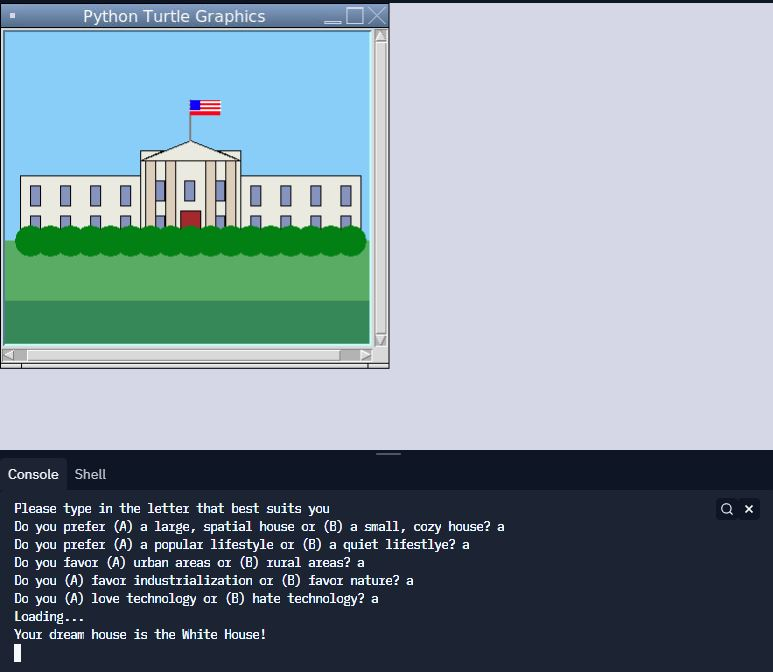
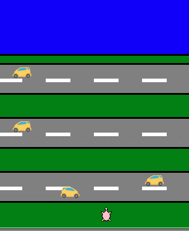
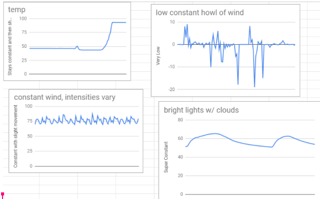
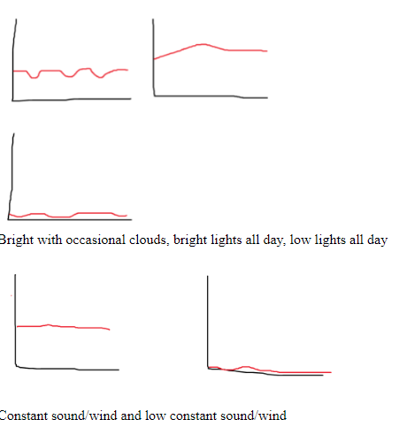
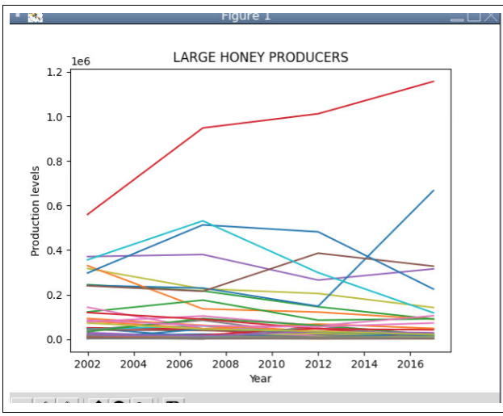

Home
Portfolio
About Me
Take a look at my work!
"What Is Your Dream House?" Personality Quiz

This quiz, made in Python, asks the user a series of questions about the type of life they like to live. The code takes inputs and generates a dream house based on the responses that were drawn by our team from scratch.
Frogger in Python

Recreated the classic game, Frogger, in python with moving cars, a leadboard, win screen, and collision.
Click Frank.
"Click Frank" is a clicker game in which you click on the sprite (Frank) to receive points. Each click earns you 1 point. The game features a shop which you can enter and exit at any time, and allows you to purchase power ups and advantages with a certain amount of points. The objective of the game is to get the highest score possible and eventually acheive... GOLDEN FRANK!
3.1.6 PLTW Project


Our group has concluded that the terrain that the data matches up with is the Rocky Mountains. The description of low temperatures that heat up quickly during the day time match with the data set and graph we presented (top left). The low constant howl of the wind matches with the staggering, but incredibly low data readings and low decimal data points of the graph on the top right. The constant winds that vary with intensity matches our graph on the bottom left along with our data set that shows a constant line that varies intensely within a small range. Lastly, the bright light during the day inter upted by clouds shows similar pattern to our graph at the bottom right, with bright light readings taking a dip for a short period of time which represents the passing clouds. Rocky Mountains is what we’ve concluded is the environment the rover took readings from.
3.2.4 PLTW Project

In project 3.4.6, we looked at data for honey production in the US spread across every state for multiple years. We used graphs and bar charts to look at the trends that the data held and found that there has been a continous increase in honey production across the US. We came to the conclusion that with time, honey production continues to increase and bees are affected more and more by this growth. Groupby methods were used to help make these graphs and decipher the data, and clesning the data was necessary due to inconsistencies and errors.